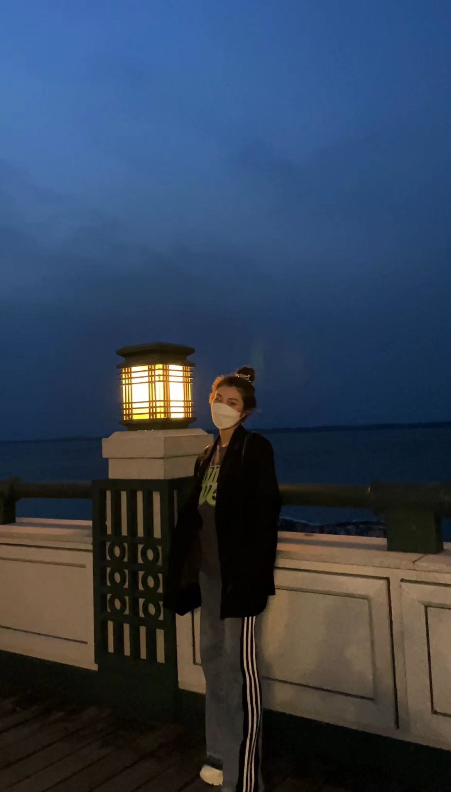
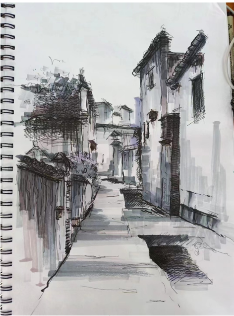

Interactive Design-HTML Exercise：Personal Profile Page
AboutMe

Hello, everyone. My name is Song Yang. I come from Heilongjiang Province, China. I am a lively girl, my personality is a little stubborn, like to insist on their own ideas, because my mother said that when things happen to believe in yourself to succeed. Usually fun and interesting things are always full of curiosity, like to ask the bottom of the matter.
Hobbies
- PaintingI like drawing very much, because I think drawing is a very relaxing thing. When I am painting, I will forget all the troubles and unhappiness and devote myself to painting. That's what I love most about drawing.
- Below is my work

Connect with Me
- Facebook：Y
- Ins：Song Yang
Few and studious, like the sun of sunrise; Strong and studious, like the light of the sun; Old and studious, like a candle!